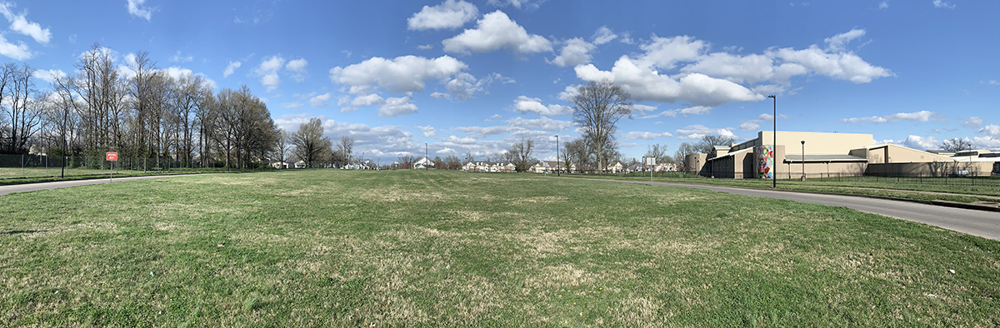
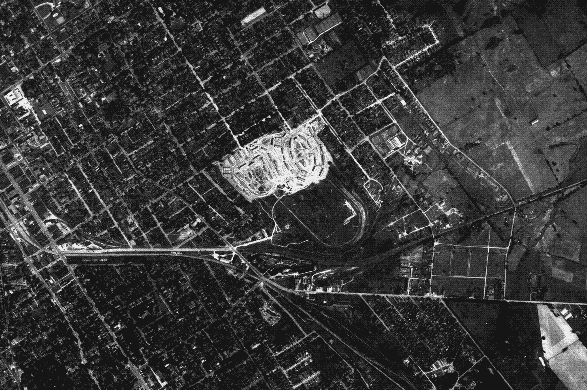

See some of my other work on Github: pwo234
Mapping Lexington, Kentucky's East End, 1934-1958
Piotr Wojcik (June 2022)
This pair of maps helps illustrate how dramatically Lexington's East End changed in the middle of the 20th century and how little remains of two major sites in the neighborhood: the Kentucky Association racetrack (top, 1934 - full screen) and the Bluegrass-Aspendale public housing projects (bottom, 1958 - full screen). Only the faintest traces of either are visible in today's landscape (see photo below). Please feel free to zoom in on each map to see how they compare to today's urban layout based on the satellite imagery in the background.
These interactive maps were made by georeferencing digital scans of historic fire insurance maps from the Library of Congress using QGIS 3.22.5 on Windows 10 and then uploading custom tilesets to Mapbox. Read more about the data and process for making these maps.

The landscape in 2021 (photo by author)

Aerial image of racetrack being redeveloped into public housing, 1937 (FDA)

Early 20th-century postcard depicting Kentucky Association racetrack (Kentucky Historical Society)

Photo of newly constructed Bluegrass-Aspendale rowhomes, 1938 (Lexingon Housing Authority)